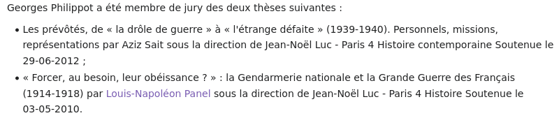

Qui est Runi Gerardsen ?
Le 30 août 2023, sur la page des requêtes aux administrateurs de Wikipédia
(anciennement ici), l'utilisateur Runi Gerardsen est intervenu pour
écrire ceci à mon sujet :
Dans la suite de ce document, je vais analyser ccette intervention qui
est, faut-il le préciser, mensongère et diffamatrice.
(Une première version de cette analyse avait été mise en ligne en septembre
2023, mais elle était apparemment trop longue et trop difficile
à comprendre pour les administrateurs de Wikipédia. Je reprends donc
tout à partir de zéro.)
- Le message de Runi Gerardsen, dont je n'avais jamais entendu parler
avant le 30 août 2023, rassemble trois personnes dans le même message :
- moi
- Runi Gerardsen
- et Louis Panel
Il importe donc de bien étudier qui sont ces trois personnes.
Passons sur moi, dont des éléments figurent
sur mon hub.
Pour Louis Panel, c'est aussi assez facile, il s'agit de quelqu'un
qui a fait un doctorat en histoire, apparemment tout en étant
officier de gendarmerie, puis qui est devenu fonctionnaire
du Ministère de la culture, en travaillant d'abord à la DRAC
Grand Est, puis en devenant (en 2021) conservateur du musée
des arts décoratifs de la ville de Strasbourg. J'y reviendrai plus loin.
I. RUNI GERARDSEN
Pour commencer, voici les principales pages de l'utilisateur
Runi Gerardsen en rapport avec Wikipédia :
Aux pages précédentes, il faut encore ajouter plusieurs sites
périphériques, qui correspondent à la même identité, comme je le montrerai
plus loin :
- Un site « personnel »
rassemblant quelques photographies, notamment patrimoniales
(plusieurs de la cathédrale de Strasbourg, dont la grande rose, le chœur,
etc., sans oublier la voûte de la chapelle Sainte-Catherine
et les ponts couverts de Strasbourg)
et proposant aussi la vente de certaines d'entre elles
via Redbubble. Ce site indique
en passant que Runi Gerardsen (ou plus exactement Rúni Gerardsen)
est « conservateur » et travaille en Alsace. Cela ne veut pas
dire que c'est vrai, mais c'est ce qui est écrit.
L'intervention de Runi Gerardsen le 30 août 2023 citée plus haut
s'avère être diffamatoire, elle m'accuse clairement
d'incompétence, elle comporte des inexactitudes et omissions, et elle
m'accuse de m'en prendre à la page de Louis Panel.
En conclusion, l'utilisateur Runi Gerardsen espère la suppression
définitive de mon compte Wikipédia.
Pour comprendre l'intervention de Runi Gerardsen, il faut donner
un peu de contexte. Pour ne pas alourdir davantage cette page,
et surtout pour ne pas éviter de parler de l'essentiel,
j'ai mis le contexte de son intervention sur une page séparée.
Ceux qui ne s'intéressent pas au contexte (en rapport
notamment avec mon travail sur les vitraux de la cathédrale
de Strasbourg) peuvent directement continuer la lecture ci-dessous
et éventuellement revenir au contexte (qui est en fait totalement
indépendant) plus tard.
L'intervention de Runi Gerardsen
Je vais maintenant reprendre point par point l'intervention
de Runi Gerardsen qui est très grave et diffamatoire.
On notera, pour commencer, que Runi Gerardsen n'est pas administrateur
de Wikipédia. On se demande donc comment il est arrivé sur
la page de la requête de déblocage. C'est un peu mystérieux, non ?
Surveille-t-il la page des requêtes aux administrateurs ?
(La liste des administrateurs est ici.)
1. Le dénigrement.
- Runi Gerardsen commence par parler de « dérapage »,
comme si j'avais commis une erreur. Or, il n'y a pas eu dérapage, il y a eu
une action trop hâtive de la part de Madame Lomita. Il ne faut pas
confondre la cause et la conséquence.
- Runi Gerardsen indique que Schwilgue serait un
faux-nez.
C'est peut-être le terme Wikipédia, mais, Schwilgue étant antérieur
à Roegel, on pourrait dire que c'est Roegel qui est un faux-nez
de Schwilgue. En fait, ce ne sont pas des faux-nez, mais simplement
deux noms pour la même personne. Je suppose que la presque totalité
des administrateurs ont plusieurs comptes, et ce pour plusieurs raisons,
plus ou moins bonnes.
- Runi Gerardsen m'accuse de m'en être pris à un autre contributeur.
Suite à cette accusation, j'ai apporté des précisions
sur la page de discussion à laquelle Runi Gerardsen fait référence (j'ai supprimé la section initiale, car elle ne correspondait pas à la réalité, mais on peut toujours la retrouver dans les archives). Je résume la situation sur une page séparée.
- Quand Runi Gerardsen écrit que j'étais en conflit
éditorial (avec Claude Truong-Ngoc), il n'a visiblement
pas les détails des échanges et il croit, à tort, que
ce conflit était lié au fait que je spammais
le « site internet » de Claude Truong-Ngoc.
Tout ceci est faux et correspond à une analyse superficielle
(et opportuniste) d'échanges qui étaient en fait parfaitement justifiés.
- Ensuite, Runi Gerardsen, qui a l'air bien informé,
écrit que je suis connu comme
le loup blanc dans les institutions culturelles de tout
l'Est de la France. C'est sans doute partiellement vrai,
mais essentiellement à la DRAC Grand-Est et dans
les musées de Strasbourg. Je ne pense pas que l'on me
connaisse dans tous les musées, par exemple à Mulhouse,
à Colmar, dans les Vosges, en Lorraine (sauf au Musée
lorrain de Nancy, un petit peu), etc.
Mais si on me connaît dans ces institutions, c'est
parce que je les ai contactées pour des demandes de
recherche, comme il est normal pour tout chercheur.
Comme HB
le sait par mon travail sur les tables mathématiques, un tel travail
suppose aussi la consultation de nombreux ouvrages (et j'ai consulté
de nombreux manuscrits dans des bibliothèques en France et à l'Étranger),
et de même, lorsque l'on travaille sur le patrimoine scientifique et
technique, on interagit naturellement avec les DRACs (Directions Régionales
des Affaires Culturelles) et les musées. Il se trouve que je travaille
sur l'horloge astronomique de la cathédrale de Strasbourg, sur
les horloges d'édifice de toute la France et aussi sur de nombreuses
œuvres se trouvant dans les musées de Strasbourg, il est donc normal
que je fasse des demandes à ces institutions. Et il est aussi normal
que je fasse des critiques constructives, notamment lorsque les
conservateurs ne font pas leur travail, c'est le devoir des chercheurs.
Les conservateurs sont loin de gérer le patrimoine à la perfection
et toutes les recherches qui pourraient être faites ne sont
pas faites, et pas simplement pour des raisons budgétaires !
C'est d'ailleurs vrai aussi ailleurs que dans l'Est de la France,
et le public serait étonné de découvrir les manquements à la gestion
du patrimoine scientifique et techniques dans des endroits
comme le Louvre et le château de Versailles.
- Maintenant, Runi Gerardsen affirme que je ne suis pas connu pour
mes compétences (ce qui est une insulte que les administrateurs
de Wikipédia n'ont pas
sanctionnée), mais pour « [m]on comportement insupportable
envers le personnel ». Pour ce qui est des compétences,
je laisse chacun juger en fonction des travaux que j'ai mentionnés
plus haut, et je le laisse juger en fonction de ses compétences.
On peut d'ailleurs se demander quelles sont les compétences de Runi Gerardsen
pour juger les miennes. On peut s'en faire une idée en parcourant ses
dernières contributions sur Wikipédia. À partir d'aujourd'hui
et en allant en arrière, on voit qu'il s'intéresse à la
cathédrale de Strasbourg, aux cloches de la
cathédrale de Strasbourg (où il va devoir mentionner l'horloge que j'ai
étudiée !), aux vitraux de la cathédrale (il semble très motivé
pour effacer toutes mes traces), on note de très nombreuses interventions
sur le patrimoine alsacien, souvent de mises en forme et de corrections,
mais on remarque aussi quelques intrus, comme des armes
(le SA 80,
le CETME Ameli,
le Panzerkampfwagen V Panther, pour ne donner que quelques exemples).
Runi Gerardsen a fait sa première contribution en 2016, mais n'a
vraiment démarré qu'à la fin du premier confinement. On note aussi le fait qu'il a récrit la page sur la Fondation
de l'Œuvre Notre-Dame, et d'autres pages liées à l'Œuvre Notre-Dame
ou la cathédrale de Strasbourg (par exemple
Hans Hammer,
Johann Knauth et
Bernhard Nonnenmacher, voir une liste un peu plus détaillée plus loin),
ou des interventions sur la mythologie nordique,
ce que le nom Runi Gerardsen pourrait laisser supposer.
- Runi Gerardsen dit que je ne suis pas un « expert incompris »,
impliquant par là que je me présenterais comme tel. La réalité,
c'est que je fais valoir auprès d'un certain nombre d'institutions
patrimoniales une connaissance d'un sujet (la documentation de mécanismes
complexes) que les conservateurs n'ont pas (les conservateurs de
la DRAC et des musées sont pour 99.999% des historiens de l'art,
pas des chercheurs en mathématiques, physique, mécanique, astronomie, etc.),
et pour lequel
les conservateurs de la DRAC ou de musées ne cherchent pas à déterminer
les besoins scientifiques, se contentant de passer par des restaurateurs
qui ne sont pas des chercheurs. C'est cela le problème, c'est cela
que beaucoup de conservateurs ne comprennent pas ou ne veulent pas
comprendre. C'est aussi simple que cela, et le grand public n'a aucune
idée de ces problèmes, puisque les institutions du patrimoine
mettent systématiquement en scène les interventions sur le patrimoine
et bloquent l'accès aux archives.
- En tous cas, on ne voit pas, dans les compétences affichées
de Runi Gerardsen, d'études sur l'histoire des mathématiques ou de
descriptions techniques de mécanismes. Je ne pense donc pas que Runi Gerardsen
soit compétent pour juger ce que j'ai fait. Et il n'est visiblement
pas non plus compétent pour apprécier mes demandes de recherches
à la DRAC Grand-Est ou dans les musées de Strasbourg. Ses propos
relèvent donc du dénigrement pur et simple.
Il n'y a pas de « comportement insupportable », il y a des
demandes de recherche et aussi des critiques de certaines gestions
inadéquates (par exemple le fait de faire des restaurations
sans faire intervenir les chercheurs concernés).
- Il faut aussi noter que je fais un travail d'inventaire du patrimoine,
de manière bénévole, sans soutien de la DRAC, alors que c'est un travail
que la DRAC devrait faire. Depuis 20 ans ou plus, les conservateurs
de la DRAC ne font strictement rien dans ce domaine et laissent périr
des éléments extrêmement intéressants et précieux du patrimoine
industriel. Quand on le dit aux conservateurs
(mon « comportement insupportable »), ils répondent « vous
nous dénigrez ». C'est cela la réalité de la gestion du patrimoine
dans les DRAC, pas seulement dans le Grand-Est. Mais si personne ne dit rien,
c'est pire, et je ne connais personne d'autre qui alerte les services
du patrimoine sur ces problèmes, parce que pratiquement personne ne regarde
les interventions sur le patrimoine scientifique et technique de près.
Et le travail que je fais,
je ne le fais certainement pas pour moi, mais in fine pour
la communauté, dont les utilisateurs de Wikipédia.
Avant de passer à la suite de l'accusation de Runi Gerardsen,
on peut noter que celui-ci est un utilisateur très actif de Wikipédia,
très au fait de ses subtilités. Il est aussi très actif sur le serveur
Discord de Wikipédia France, comme j'aurai l'occasion de le montrer.
Sur le serveur Discord, Runi Gerardsen indique avoir travaillé
au CRMH (donc à la DRAC) et que maintenant (octobre 2023) il est
dans une autre administration avec 27 personnes sous sa direction.
Cette administration est manifestement en Alsace et très certainement
à Strasbourg. A priori, Runi Gerardsen travaille soit pour la DRAC,
soit pour la ville de Strasbourg.
Or, en date de fin octobre 2023, il n'y a aucun Runi Gerardsen dans
les annuaires de la DRAC (pour toute la France), ni dans les services
municipaux de la ville de Strasbourg
(dont dépendent les musées de Strasbourg). On peut donc émettre
quelques doutes sur l'authenticité de l'identité
« Runi Gerardsen ». J'y reviendrai.
2. L'accusation relative à Louis Panel.
- Avant de considérer que ce ne serait pas une mauvaise chose de m'éliminer
de Wikipédia (où il est vrai que j'ai contribué infiniment peu par rapport
à lui), Runi Gerardsen défend Louis Panel. Ou plutôt, il m'accuse de m'en prendre
à la page Wikipédia consacrée à Louis Panel. Runi Gerardsen semble avoir analysé
l'historique de cette page et affirme qu'il existe un « conflit irl (in real life) » (que c'est chic) entre moi et Louis Panel.
- Tout cela est bien surprenant et Runi Gerardsen paraît extrêmement bien
informé sur mes contacts avec les institutions patrimoniales
de l'Est de la France, il suit apparemment la page de Louis Panel,
et concernant les vitraux, il affirme avoir un accès facile à la documentation , c'est ce qu'il écrit sur la page de discussion de Laurent Jerry :
- Par ailleurs, on peut encore noter que suite à un échange entre
la conservatrice du musée de l'Œuvre Notre-Dame et l'utilisateur
Ji-Elle,
ce dernier estime que Runi Gerardsen est le mieux à même de développer
la section sur les plans et dessins du Moyen-Âge à l'Œuvre Notre-Dame :
Runi Gerardsen ajoute (en février 2021) que les collections
des musées et de l'Œuvre Notre-Dame « devraient être mises prochainement en ligne », il a donc l'air bien au courant. Il est donc forcément
connu de Cécile Dupeux, la conservatrice du musée.
Voici d'ailleurs, pour mémoire et en vrac,
quelques unes des pages intimement
liées aux musées de Strasbourg ou à la cathédrale de Strasbourg
et abondamment alimentées par Runi Gerardsen :
- Ce Runi Gerardsen est donc manifestement quelqu'un que tous les musées
de Strasbourg connaissent, qui s'occupe de patrimoine, qui est considéré
comme le plus à même de remplir même les pages des musées, qui s'intéresse
à tout ce qui est militaire, qui connaît bien Louis Panel, qui le défend, etc.
Et il semble me considérer comme son ennemi personnel.
Pourtant, avant le 30 août 2023,
je n'avais jamais entendu parler de lui, alors que j'interagis avec les musées
de Strasbourg, la DRAC et l'Œuvre Notre-Dame depuis plus de 20 ans.
C'est un peu bizarre.
- Il faut se poser la question : pourquoi quelqu'un qui n'est pas
intervenu explicitement sur la page Louis Panel m'accuserait ici de m'en prendre
à cette page ? Pourquoi Runi Gerardsen surveille-t-il
cette page et pourquoi y tient-il apparemment tant qu'il est prêt
à souhaiter que je sois éliminé
de Wikipédia ? Ce genre d'intervention ne devrait-elle
pas venir d'autres utilisateurs, comme celui qui a créé
la page Louis Panel ?
II. Louis Panel.
1. Mes interactions avec Louis Panel.
- Revenons maintenant aux accusations de Runi Gerardsen par rapport à
Louis Panel. D'abord, il est exact que j'ai eu des contacts avec Louis Panel.
Je lui ai écrit à plusieurs reprises en 2014, lorsque j'ai appris
qu'un réaménagement de la plate-forme de la cathédrale de Strasbourg
était prévu (il a eu lieu en 2018-2019).
À l'époque, j'avais déjà examiné à deux reprises l'horloge
de la plate-forme, j'étais parfaitement conscient du fait que les horloges
étaient souvent (voire toujours) mal restaurées, même lorsqu'elles étaient
classées (par exemple pour l'horloge astronomique de la cathédrale
de Strasbourg, la DRAC Alsace est responsable de la perte d'une partie
de l'horloge en 2001, et ce n'est pas le seul cas), et je suis intervenu
pour avertir la DRAC et l'Œuvre Notre-Dame de l'importance qu'il y avait
à ne pas commettre d'erreurs, à tout documenter, à faire intervenir
des chercheurs, etc. Je suis intervenu de bonne foi afin de protéger
le patrimoine et pour éviter qu'une nouvelle
horloge soit massacrée (dans le cas présent, en supprimant
les moteurs, ce que l'architecte M. Caillault semblait vouloir faire).
M. Panel, l'un des destinataires de mes messages,
n'a jamais répondu, pas plus que l'architecte de la cathédrale de Strasbourg,
M. Caillault. En fait, sauf si l'on médiatise sa démarche,
les institutions du patrimoine ont visiblement tendance à ignorer
les demandes de particuliers.
En 2015, j'ai néanmoins pu avoir une entrevue avec
Mme Carole Pezzoli et M. Panel à la DRAC de Strasbourg. J'ai pu y exposer
mes inquiétudes, mais cette réunion n'a abouti à rien. Il n'y a pas eu par
la suite de soutien de la part de la DRAC pour mes recherches, alors pourtant
que la DRAC a parmi ses missions le soutien des initiatives de valorisation
du patrimoine.
Quand Runi Gerardsen parle de conflit entre Louis Panel et moi,
si vraiment on peut parler de conflit (pour moi il n'y en a pas),
c'est Louis Panel qui en est responsable, avec éventuellement
d'autres conservateurs de la DRAC. C'est moi qui ai alerté
la DRAC en 2014 sur les risques pour l'horloge liés
au réaménagement de la plate-forme de la cathédrale de Strasbourg,
et c'est M. Panel qui a ignoré mon appel. Si le grand public
savait combien les chercheurs et le public lui-même sont ignorés
par la DRAC, peut-être verrait-il la DRAC autrement !
C'était à M. Panel de répondre dès 2014 et à ne pas
se croire omniscient. (Au final, l'horloge n'a pas encore été restaurée,
mais au moins elle est à-peu-près intacte. Le problème principal
est qu'elle est actuellement mal mise en valeur, car elle n'est pas
visible des deux côtés.)
- Par la suite, en 2018, M. Panel a organisé l'opération de nettoyage
du buffet de l'horloge astronomique de la cathédrale de Strasbourg (en même
temps que la restauration des vitraux qui se trouvent au-dessus de l'horloge)
et je suis intervenu à plusieurs reprises pour dénoncer l'absence d'implication
des chercheurs et la non prise en compte de leurs besoins. Les services de
la DRAC n'ont pas les compétences nécessaires pour déterminer les besoins
du patrimoine scientifique et technique qui ne sont pas que des besoins
de conservation matérielle.
Au total, j'ai écrit à quatre personnes :
- Christelle Creff, la directrice de la DRAC
- Louis Panel
- Carole Pezzoli
- Jonathan Truillet
- Ni M. Panel, ni un autre employé de la DRAC, ne m'a jamais répondu,
mais par contre en 2019, la DRAC Grand-Est a porté plainte contre moi
à la police. Cette plainte n'a pas eu de suites.
À la même époque, la DRAC s'est aussi permis
d'écrire à la direction de mon laboratoire de recherche, afin
de m'intimider, alors que mes interventions auprès de la DRAC
étaient faites à titre privé, ce qui était parfaitement connu.
Enfin, aussi au même moment, la DRAC a tenté de rallier l'archiprêtre
de la cathédrale de Strasbourg de l'époque, M. Michel Wackenheim pour engager des poursuites
à mon encontre, ou se joindre à la plainte susmentionnée, mais cela ne s'est pas fait. Je détiens le courrier envoyé à M. Wackenheim,
ce n'est donc pas une accusation sans fondements.
- Vers mai 2021, M. Panel a été nommé conservateur du musée des arts
décoratifs de Strasbourg, où il a pris ses fonctions en septembre 2021.
Depuis cette date, il n'a jamais répondu à mes demandes de recherches,
alors que l'une des missions des musées est d'accueillir les chercheurs.
Cela fait d'ailleurs partie des profils des postes de conservateur.
La même attitude se retrouve chez le conservateur en chef des musées
de Strasbourg (qui ne m'a jamais répondu, et ce depuis sa prise de fonction
en 2018, donc avant l'arrivée de M. Panel). Aujourd'hui, l'ensemble
des musées de Strasbourg bloquent mes accès. Cette situation n'a pas
évolué, malgré des saisies de la CADA et malgré la saisie du défenseur
des droits (qui est assez faible sur un tel sujet qui n'est pas
une discrimination courante).
2. La page Wikipédia de Louis Panel et ce qui gravite autour.
- Qui est donc M. Panel ? Comme mentionné plus haut,
il s'agit d'une personne qui a été
officier de gendarmerie et a fait une thèse sur la gendarmerie pendant
la première guerre mondiale. Il est ensuite devenu conservateur à la DRAC
à Strasbourg, où il était responsable de la cathédrale de Strasbourg (et notamment
de la restauration des vitraux du transept sud), puis conservateur du
musée des arts décoratifs de Strasbourg.
- Runi Gerardsen a attiré mon attention sur la page Wikipédia de
Louis Panel. Ce qui est particulièrement intéressant, c'est l'historique
de cette page. J'y découvre un parcours cahotique, des ajouts et des
retraits par divers utilisateurs, certains anonymes. L'un des intervenants
de 2021 affirme que cette page a été créée par Louis Panel lui-même
et que les identifiants Seignobos, Lascaze, Strasburgensis, Borgrumm
correspondraient tous à Louis Panel. Je ne sais pas si c'est vrai,
mais analysons la situation avec les yeux de 2023.
- La page Louis Panel a été créée le 9 mai 2021 par un certain Seignobos.
(Rétrospectivement, il est curieux de voir que cette création coincide,
à peu de jours près, avec l'accession de M. Panel au poste
de conservateur du musée des arts décoratifs.)
L'utilisateur Seignobos a fait sa première contribution en 2020 sur la page de Henri Seignobosc. Ce dernier était un historien et officier et la page cite d'ailleurs le livre de L. Panel sur la gendarmerie,
mais aussi un article de 2003 de Louis Panel, ainsi qu'un ouvrage
de Jean-Noël Luc sur la gendarmerie. M. Luc s'avère
avoir été le directeur de thèse de Louis Panel.
Tous ces ajouts sont de l'utilisateur Seignobos
qui a visiblement fait des recherches au Service Historique
de la Défense qu'il mentionne. Il y a donc un lien étroit
entre cet utilisateur et L. Panel.
Et L. Panel connaît Seignobosc. L'utilisateur Seignobos a aussi
contribué à la page sur l'École des officiers de la Gendarmerie
nationale, à d'autres pages apparentées, mais aussi
le 18 février 2021 à la page de Caroline Giron-Panel :
- On peut trouver un peu curieux qu'un utilisateur comme Seignobos
contribue à la page de Louis Panel et à une page qui n'a apparemment
aucun rapport comme celle de Caroline Giron-Panel, qui est
une musicologue diplômée de l'École des Chartes, probablement
apparentée à L. Panel.
- Mais Seignobos contribue aussi à la page sur le
MAS,
une vedette lance-torpilles italiennes. Cette page a été
créée et abondamment alimentée par l'utilisateur
Adri08.
- En 2022, l'utilisateur Seignobos a encore ajouté des informations
sur la page de Louis Panel au sujet de la loi Notre-Dame
et enfin sur la saison 17 de Secrets d'histoire, qui est justement
une saison où Stéphane Bern est venu au musée des arts décoratifs
de Strasbourg et a rencontré Louis Panel.
(Voir ici le message de Louis Panel à ce sujet
sur LinkedIn, avec une photographie de lui et Stéphane Bern.)
Seignobos suit donc l'activité de Louis Panel de très près !
Louis Panel s'intéresse donc à Seignobosc et Seignobos
s'intéresse à Panel, et à Caroline Giron-Panel, qui doit lui
être apparentée. Et Seignobos s'intéresse à la gendarmerie
ainsi qu'à l'histoire militaire.
Et occasionnellement, Seignobos s'occupe de patrimoine
alsacien, comme lorsqu'il intervient sur
le haras de Strasbourg, où il ajoute une mention de l'article de Louis Panel
sur le haras, « Les haras de Strasbourg », Regards, 2019, p. 9-10.
(Regards est un périodique difficilement accessible,
apparemment sur l'actualité des musées de Strasbourg, mais à vérifier.
Si on mentionne cette revue, c'est qu'on est très introduit
dans le patrimoine alsacien ou dans les musées de Strasbourg,
car je ne sais même pas où trouver cette revue)
La conclusion n'est pas difficile à déduire, c'est que,
comme un intervenant anonyme l'a signalé en 2021,
Seignobos et Louis Panel semblent être la même personne. Je ne vois pas d'autre possibilité.
Petit retour sur la vedette MAS commentée par Seignobos,
la page d'Academia (un site pseudo-académique)
fait état de l'article De la guerre des vedettes en Adriatique à la légende des MAS: histoires et mémoires des Motoscafi armati siluranti signé par Louis N. Panel, article de 2010 que l'on retrouve intégralement ici.
- Après la création de la page de Louis Panel par Seignobos,
Bertrand Labévue
a tout de suite mis un bandeau d'admissibilité,
mais personne n'est allé plus loin.
- Le 10 mai 2021, il y a eu des interventions d'un certain
Classrail et aussi de Domenjod, pour ne citer que ces deux.
Les premières de ces interventions semblent avoir été mineures.
Cependant, Classrail a ajouté des éléments sur l'archéologie, a renommé la page
(initialement Louis N. Panel, maintenant Louis-Napoléon Panel)
en affirmant que M. Panel était connu ainsi en littérature,
ce qui n'était pas tout-à-fait vrai.
Tout cela continue de n'éveiller aucun soupçon (même pas de celui
ou ceux qui ont alerté les administrateurs en 2021).
Deux minutes après une intervention de Classrail, c'est Seignobos
qui intervient. Comme c'est curieux. Et personne ne remarque rien.
De manière évidente, pratiquement toutes les modifications
du 10 mai 2021 sont d'une seule personne, sous deux identités
différentes : Seignobos et Classrail.
On peut encore remarquer que la page de
Wikidata
consacrée
à Louis Panel a été abondamment alimentée
par Classrail. Cette page a par ailleurs été
créée par un certain MrProperLawAndOrder qui est bloqué
depuis le 20 juin 2020. Cet utilisateur est en outre lié
à l'utilisateur Tamawashi qui est bloqué indéfiniment.
Après la création de la page Wikidata, et avant que
Classrail n'intervienne, on peut voir un certain nombre de grandes
contributions de Epìdosis.
Enfin, la photographie de Louis Panel a été ajoutée
sur Wikidata le 27 novembre 2021 par Hsarrazin (Hélène Sarrazin, aux Archives des Yvelines),
ce dont on peut s'étonner,
puisqu'elle prétend être de Domenjod qui l'a mise en ligne neuf jours plus tôt (et qui aurait très bien pu la mettre sur Wikidata, auquel il
avait déjà contribué).
- La page de Louis Panel suit son chemin jusqu'en juillet 2021.
Le 14 juillet, Seignobos ajoute un lien vers une vidéo de M. Panel
puis le 18 juillet, un contributeur anonyme apparemment bien informé
annonce que M. Panel a été nommé conservateur
du musée des arts décoratifs.
Le même contributeur, ou un autre, indique déjà que
Seignobos n'est autre que M. Panel.
- Le 1er août 2021, Seignobos retire la mention
de la nomination au musée des arts décoratifs, alors que n'importe
qui peut vérifier que M. Panel est aujourd'hui conservateur du musée.
On ne comprend pas très bien cette modification, mais apparemment
Seignobos en savait plus que d'autres. Peut-être y avait-il une
erreur sur la date de juin 2021 qui a été donnée le 18 juillet ?
Comment Seignobos pouvait-il savoir cela sans être extrêmement proche
de Louis Panel ? Ou Louis Panel lui-même ?
- Le 15 octobre 2021 apparaît un certain utilisateur
Strasburgensis, un compte créé le 5 octobre 2021 et qui
n'a été utilisé que pour indiquer que L. Panel était
conservateur du musée depuis le 15 septembre 2021.
Un compte juste pour cela ? Je laisse les lecteurs conclure.
- Et tout cela continue. On apprend ensuite sur la page de l'historique
que deux autres identités seraient des couvertures de M. Panel,
à savoir Lascaze et Borgrumm :
Est-ce exact ? On pourrait croire que non. Aucun des deux utilisateurs Lascaze et Borgrumm n'intervient sur la page de Louis Panel.
Pourtant, si on regarde l'historique de Lascaze, on trouve
d'étranges coincidences. Sa première contribution en 2007
concerne un officier de gendarmerie. Et puis en 2016 et 2017,
il est beaucoup intervenu sur Caroline Giron-Panel,
mais aussi sur François Gustave Panel, probablement un ancêtre
de Louis Panel. Et puis il est intervenu sur la page
d'André Lasseray
(qu'il a créée en 2019), ensuite alimentée par Seignobos.
Et Lascaze est intervenu en 2019 pour préciser le classement du
TGV 001, ce qui
relève de la DRAC. Quelle est alors la conclusion ?
Et Borgrumm ? D'abord, pour ceux qui ne le reconnaissent pas,
c'est du verlan pour pomme de terre en alsacien
(voir ici pour une recette de salade de pommes
de terre alsacienne).
Quelles sont les contributions de Borgrumm ? Un peu sur
la gendarmerie et beaucoup sur Georges Philippot qui était général de gendarmerie.
Borgrumm prétend être un fils du général Philippot, ce dont je doute.
Mais surtout, ce qui est intéressant, c'est que ce général a été
membre du jury de thèse de Louis Panel :

- En conclusion, je pense que celui, celle ou ceux qui ont analysé
l'historique de la page de Louis Panel en 2021 et 2022 ont vu
juste et Seignobos, Borgrumm, Lascaze,
Strasburgensis semblent être des couvertures pour Louis Panel,
auxquelles il faut ajouter Classrail.
Si cela est vrai, cela fait au moins quatre faux-nez
pour modifier une seule page,
ce qui, me semble-t-il, est déconseillé.
On peut bien sûr douter de ce qui précède,
mais il est de toutes façons clair que
Runi Gerardsen connaît Louis Panel,
sans quoi il ne le défendrait pas. Et Louis Panel connaît alors
forcément Runi Gerardsen. Un autre que Louis Panel prendrait-il
le risque de me diffamer pour le compte d'un tiers ?
Je ne pense pas que cela soit crédible !
Louis Panel sait donc forcément qui m'a diffamé.
3. Et du côté de Caroline Giron-Panel.
Mais cela ne s'arrête pas là, loin de là !
Ceux qui ont tiré la sonnette d'alarme en 2021 n'ont pas tout vu !
- Voyons maintenant la page de Caroline Giron-Panel.
- Celle-ci a été créée par
un utilisateur anonyme le 10 mai 2016. La seconde modification
à cette page est d'un certain En passant qui est
soupconné d'être un faux-nez. Pour l'instant, je ne peux pas
me prononcer.
- La seconde grande contribution à la page de
Caroline Giron-Panel est celle d'un certain ThbtGrrd :
Cet utilisateur est donc bloqué depuis le 30 août 2021. Si on étudie ses contributions, on voit
surtout des interventions en rapport avec des archives ou l'école des Chartes, alors que Caroline Giron est justement ancienne élève des Chartes.
Si on analyse les causes du blocage, on voit que ThbtGrrd
est la même personne que Priam4, qui serait lui-même identique
à Ixad-kaljan. C'est assez curieux.
- Ensuite, viennent de nombreuses contributions de Nomen ad hoc.
Et cet utilisateur a plusieurs fois été bloqué. C'est aussi assez curieux. Et encore plus curieux, on le retrouvera plus bas dans un autre contexte. Nomen ad hoc a aussi abondamment contribué à la
page Wikidata de Caroline Giron-Panel.
- La page de Caroline Giron-Panel existe aussi en anglais et on peut constater que le créateur de la page,
un certain LouisAlain, est bloqué depuis le 6 novembre 2021 (voir ici pourquoi).
Je me garderai de conclure, mais c'est encore assez bizarre.
- Revenons maintenant à l'historique de la page de Louis Panel. Le 18 novembre 2021, l'utilisateur Domenjod ajoute une photographie de Louis Panel :
Cet utilisateur était déjà intervenu le 10 mai 2021 pour des modifications
mineures. Quelles sont ses contributions à part ces deux ?
Il s'avère que de nombreuses contributions concernent la gendarmerie. Et l'histoire militaire.
Et les Panzerkampfwagen qui intéressent Runi Gerardsen.
Étonnant, non ? Et donc, cet utilisateur poste une photographie
de Louis Panel ? Quand on poste une photographie pour vous,
c'est ou bien que vous ne savez pas le faire vous-même,
ou bien que c'est vous-même sous une autre identité.
Que faut-il alors conclure de Domenjod ?
On pourra encore remarquer que Domenjod et Nomen ad hoc
ont abondamment contribué à la page de Jean-Noël Luc,
le directeur de thèse de Louis Panel, que j'ai déjà
mentionné. (En passant, on note un utilisateur
qui a créé un compte le 9 juillet 2023 pour apporter six
modifications le même jour,
quatre à la page de Jean-Noël Luc, et deux à une page
sur les Mélanges, un type de publication qui venait justement d'être
publié pour Jean-Noël Luc. Peut-être que cet utilisateur n'est que
l'un des auteurs de ces Mélanges.)
Il n'est donc pas interdit de penser que Nomen ad hoc
et Domenjod sont la même personne.
Nomen ad hoc est aussi le presque unique contributeur de la page
sur Charles Czarnowsky, architecte qui a été impliqué dans la conservation de la cathédrale
de Strasbourg.
- Je ne vais pas élaborer davantage, mais à ce stade il est assez
clair que les avatars suivants forment un groupe
entretenant un rapport étroit avec Louis Panel :
On remarquera en passant que Runi Gerardsen est presque
un anagramme de Strasburgensis.
- Le 2 septembre 2023, j'ai signalé une partie de ces problèmes
sur la page de la requête aux administrateurs :
Ma requête devrait se trouver dans l'archive,
mais en fait elle a été balayée de l'historique,
ce qui n'est pas normal.
Que s'est-il passé ensuite ? Comme on le voit ci-dessus,
ma requête a été balayée par l'administrateur Durifon. Je ne sais pas qui est cet administrateur, mais en tous cas il a commis une erreur. Il a supprimé une requête en empêchant qui que ce soit de débattre à son sujet. Pourquoi aurait-il fait cela, sinon pour protéger Runi Gerardsen ?
- Mais l'administrateur Durifon n'a pas fait que supprimer ma requête,
il a aussi, deux minutes avant de la supprimer, supprimé
quelques éléments de la page de Louis Panel :
Pourquoi a-t-il fait cela et qu'a-t-il supprimé ? Durifon a supprimé quelques éléments
de la page de Louis Panel qui étaient clairement du type CV,
mais cela ne veut pas dire que ces suppressions aient été honnêtes.
Elles ressemblent beaucoup plus au déclenchement d'une soupape
de sécurité, à un lâcher de lest pour ne pas faire couler le navire,
et peut-être (ce qui est naïf) pour tenter
de me faire croire que ma requête
avait été prise en compte. Elle ne l'a évidemment pas été.
- J'arrête provisoirement mon analyse ici.
Je pense que l'affaire n'est pas close, car il y a d'autres
identités suspectes, comme je l'ai montré.
C'est aux administrateurs
de Wikipédia de poursuivre l'enquête et de faire le ménage.
En tous cas, cela ne me donne pas du tout envie de contribuer
à Wikipédia. Et si l'un des administrateurs veut me bloquer,
qu'il le fasse. Cela n'aura aucun impact sur moi.
Conclusions
- Ce qui précède identifie clairement
Runi Gerardsen,
Classrail,
Seignobos,
Borgrumm,
Lascaze,
Strasburgensis,
Domenjod comme étant des couvertures fortement apparentées à Louis Panel. En soi, ce n'est pas très grave, sauf lorsque des personnages de fiction sont créés, ce qui est le cas. Cela s'appelle alors mentir. À cette liste s'ajoute sans doute Nomen ad hoc qui est clairement suspect, et peut-être
encore d'autres identités.
La moindre des choses serait pour l'un des utilisateurs du groupe précédent de se déclarer sur la
page des alias.
- Le 30 août 2023, sous l'identité de Runi Gerardsen, quelqu'un connaissant bien Louis Panel a tenu des propos diffamatoires à mon encontre, en mettant en doute mes compétences (pour lesquelles il n'a pas de qualifications), en affirmant à tort que j'avais spammé le site d'un autre contributeur. Il m'a accusé de m'en prendre à la page Wikipédia de Louis Panel, ce qui n'est pas vrai. Par contre, l'analyse précédente montre que cette page a été alimentée par
quelqu'un de visiblement très proche de l'intéressé lui-même,
sous différentes identités, à des fins de mise en valeur.
Enfin, Runi Gerardsen a souhaité que je sois éliminé de Wikipédia.
Ses propos relèvent du dénigrement.
- Dans son intervention, Runi Gerardsen semble faire un parallèle entre des
modifications de la page Wikipédia Louis Panel par un ou des intervenants
anonymes, et ce que j'aurais fait en 2015, qui avait, à l'époque,
été qualifié de vandalisme par Claude Truong-Ngoc. En d'autres termes,
il semble dire que j'aurais vandalisé la page Wikipédia qui lui est consacrée.
Mais comme on l'a vu plus haut, il y a eu des interventions sur
cette page, par un ou plusieurs contributeurs anonymes,
et ces interventions ont eu pour but d'alerter la communauté Wikipédia
sur les abus de certains contributeurs, dont Seignobos. Cela n'est pas,
que je sache, du vandalisme. Si cela est du vandalisme, alors
Madame Lomita, et un grand nombre d'autres administrateurs sont
des vandales, ce que je ne crois pas. Rectifier quelque chose,
ce n'est pas du vandalisme. Lorsque Madame Lomita a retiré mes liens
sur les vitraux,
je considère qu'elle a mal fait, mais pas que c'est du vandalisme.
De même, lorsque j'ai ajouté ou supprimé la source de l'origine
de l'horloge de la plate-forme de la cathédrale de Strasbourg,
ce n'était pas du vandalisme, simplement une précision ou une correction,
même si, peut-être, elle ne respectait pas exactement les règles
de Wikipédia sur les sources.
Enfin, sur ce point, il faut noter que le 2 septembre 2023,
l'administrateur Durifon a supprimé plusieurs parties de ladite
page, en les qualifiant expressément de publicité. Il donne comme
motif de suppression « Dépub », c'est donc qu'il reconnaît
le problème. Maintenant, qu'a-t-il exactement supprimé ?
Sa toute dernière suppression est celle de la phrase « Ses thèmes de recherche portent sur l'histoire de l'architecture, de l'archéologie et des arts décoratifs ». Il est vrai que cela fait presque un peu rubrique
de hobbies d'un CV. La phrase supprimée, si l'on remonte l'historique,
date de l'origine, et est de Seignobos. Durifon supprime donc
une partie de la contribution de Seignobos.
Qu'en est-il de la modification précédente de Durifon ?
Considérons simplement trois cas :
la partie « hobbies » (aussi de l'origine) avait été
simplifiée une première fois ; un autre alinéa commençant par
« Il a été membre de la commission nationale du patrimoine et de l'architecture... » et remontant aussi à l'origine et
à Seignobos a aussi été supprimée ;
et Durifon a aussi supprimé la section « Le 29 avril 2019,
quinze jours après l'incendie de Notre-Dame de Paris, ... »
qui avait été introduite par Seignobos le 20 décembre 2021.
On peut maintenant se demander pourquoi Durifon a été si sélectif ?
- Pour en revenir aux propos diffamatoires de Runi Gerardsen,
ceux-ci n'ont pas été condamnés par les administrateurs de Wikipédia, alors que Wikipédia prétend faire le contraire sur la page
contre les attaques personnelles.
Plus généralement, l'attitude de certains administrateurs n'incite pas
à la confiance et toute cette affaire ne fait que décrédibiliser Wikipédia,
puisque les administrateurs se montrent incapables de faire le ménage
et de détecter des abus évidents.
- L'analyse de l'intervention de Runi Gerardsen
que j'ai postée sur la page des requêtes
aux administrateurs a été supprimée,
sans qu'aucune mesure, ni même discussion, n'ait été entamée
parmi les administrateurs. Cela s'appelle de la
censure
et clairement certains administrateurs
de Wikipédia (qui souvent prennent les autres de haut et pensent
qu'eux seuls font la loi)
ne font pas leur travail. De toutes façons, le fonctionnement
des administrateurs de Wikipédia n'est pas parfait, ne serait-ce que
parce que la plupart d'entre eux ne se connaissent même pas eux-mêmes.
Il faudrait au moins que les administrateurs soient en mesure de certifier
leurs propres identités, de les relier à des identités physiques,
ce qui visiblement n'est pas le cas.
- À tout ce qui précède, il faut encore ajouter que nous ne sommes
pas ici simplement face à quelqu'un qui a créé plusieurs identités
(ce qui ne me gêne pas excessivement), mais aussi face à quelqu'un qui
a construit des fictions. Par exemple, le personnage Runi Gerardsen
est associé à plusieurs sites
(dont celui-ci) qui peuvent
donner l'impression que Runi Gerardsen existe vraiment et que c'est
un photographe amateur.
À en croire les liens donnés au début de cette page, on pourrait
aussi penser que Runi Gerardsen
est un polyglotte nordique, mais j'en doute fort.
On ne trouve d'ailleurs aucune intervention de Runi Gerardsen dans des
langues nordiques, sauf quelques retouches ponctuelles, certainement
créées pour la construction du personnage qui n'est qu'une simple fiction.
Ainsi, sur wiktionary, on trouve essentiellement des contributions
de Runi Gerardsen en date du 20 mai 2023 donnant des précisions
de traductions ou prononciations de quelques mots danois, tous
commençant par G, comme si Runi Gerardsen (dont le nom commence par G)
avait simplement pris un dictionnaire danois entre les mains et recopié
quelques entrées pour donner corps à son personnage.
(En fait, c'est presque ce qui s'est passé, puisque Runi Gerardsen
indique sur le serveur Discord mentionné plus haut qu'il a fait
quelques essais sur Wiktionary.
Comme mentionné plus haut, Runi Gerardsen est visiblement
un conservateur, il a travaillé à la DRAC, il est en Alsace dans
une autre administration culturelle. Très impliqué dans la documentation
du patrimoine strasbourgeois, il est très certainement dans une
grande structure strasbourgeoise, puisqu'il aurait 27 personnes
sous sa direction. Pourtant, comme je l'ai indiqué, il n'y a pas
de Runi Gerardsen à Strasbourg, ni dans toutes les DRAC.
Ce personnage est un personnage de fiction,
avec une pseudo-identité nordique. Et pour avoir été ennuyé
par mes interventions auprès de la DRAC, Runi Gerardsen doit
être ou bien Christelle Creff, ou bien Carole Pezzoli,
ou bien Jonathan Truillet ou bien Louis Panel.
Or, Mme Creff est aujourd'hui à Paris et je ne crois pas
qu'elle s'intéresse à la gendarmerie ou aux armes. Mme Pezzoli
a aussi quitté la DRAC et ne semble pas partager ces intérêts.
Et M. Truillet travaille pour RNDP, l'établissement
de Restauration de Notre-Dame de Paris. Le seul encore sur place
et concerné par mes demandes dans les musées de Strasbourg,
c'est Louis Panel.
- On peut se demander comment Runi Gerardsen en est venu à intervenir
dans le cadre de ma demande de déblocage (message initial
de cette page). Il y a plusieurs possibilités.
Il se peut que Runi Gerardsen ait surveillé mon activité
autour des vitraux à partir du 27 août 2023, car ce jour-là, j'ai
informé un certain nombre de personnes, dont M. Panel,
de l'existence de
mon site
et peut-être M. Panel en a-t-il parlé à
Runi Gerardsen. Dans ce cas, il faudrait que Runi Gerardsen dise
clairement s'il parle en son nom, ou au nom de Louis Panel.
- Il y a évidemment un certain toupet (et aussi une certaine
naïveté) à intervenir à mon sujet, à critiquer mon travail et à espérer
se débarrasser de moi. On comprend bien sûr que certains y trouveraient
une certaine satisfaction et pourraient un peu plus facilement
développer la page Louis Panel, laquelle,
comme cela a été remarqué, semble être un CV en ligne,
ce qui n'est aucunement le but de Wikipédia. Notons en passant que
les autres conservateurs de la DRAC Grand-Est, ou même ceux des
musées de Strasbourg, n'ont pas de page Wikipédia personnelle. Pourquoi
en faudrait-il une pour Louis Panel ? Les seuls conservateurs
passés
des musées de Strasbourg à avoir une page Wikipédia
semblent être Hans Haug, Ernst Polaczek, Roland Recht et Fabrice Hergott. Il n'y en a pas pour Victor Beyer, ni Jean-Daniel Ludmann, ni Étienne Martin, ni Cécile Dupeux, ni Bernadette Schnitzler, ni Florian Siffer, ni Paul Lang, ni encore
Joëlle Pijaudier-Cabot, ainsi que d'autres
qui en mériteraient tout autant.
Et il y a une certaine impertinence à venir m'accuser d'avoir deux comptes,
d'être malhonnête, quand en réalité celui qui m'accuse en a une dizaine,
voire plus !
- Runi Gerardsen a parlé de « dérapage » au sujet
de mes interventions, mais je crois que le vrai dérapage est le sien.
S'il n'était pas intervenu, il n'aurait peut-être jamais été relié
à Seignobos et d'autres.
Il est par ailleurs possible que l'ex-administratrice
HB a été
le facteur déclencheur, ses propos (un peu) complaisants ayant peut-être
irrité Runi Gerardsen.
Il est pour moi étonnant de voir la facilité avec laquelle certains
administrateurs croient tout ce qui est écrit. Ainsi, les accusations
de vandalisme de Claude Truong-Ngoc ont apparemment convaincu tout
le monde. En réalité, comme je ne vais jamais sur mes pages de discussion,
je ne savais même pas qu'il y avait ces accusations sur ma page.
Si je l'avais su, j'y aurais répondu il y a déjà huit ans ! (C'est
maintenant fait.) C'était en tous cas une belle occasion à saisir
pour Runi Gerardsen.
Au final, il est décevant de voir que ni DocMuséo,
ni Binabik,
ni Madame Lomita, ni Bédévore, ni Bertrand Labévue,
ni Laurent Jerry,
ni HB, n'ont condamné
les propos de Runi Gerardsen, et aucun ne m'a demandé ma version
des faits. Tout ceci nuit énormément à Wikipédia et à l'image
des administrateurs et administratrices.
- Je trouve par ailleurs dommage, et cela s'applique aussi à d'autres
contributeurs prolifiques, que les contributions de M. Runi Gerardsen
restent pour la plupart anonymes.
Il me semble qu'il serait bien plus valorisant
pour son auteur réel que celui-ci officialise ses différentes activités
de documentation historique, ses intérêts pour l'histoire militaire
et peut-être pour d'autres sujets que je ne connais pas.
- Comme Runi Gerardsen connaît visiblement bien M. Panel,
il me reste à espérer qu'il lui transmettra
mes souhaits de chercheur. En effet, depuis 2014, M. Panel
n'a jamais répondu à mes demandes, c'est lui qui n'a pas pris
en compte les besoins des chercheurs au niveau de l'horloge astronomique
de la cathédrale de Strasbourg
(même si l'intervention ne concernait que le buffet, il y a des
besoins collatéraux à prendre en compte), c'est lui qui m'a diffamé
auprès de la direction de mon laboratoire et c'est lui qui depuis 2021
ne répond pas à mes demandes de recherche au sein du musée des
arts décoratifs de Strasbourg, violant ainsi les missions des musées.
Il s'agit d'un dénigrement des chercheurs et d'une attitude discriminatoire.
Il y a une mission d'accueil des chercheurs par les musées
et cette mission est explicitement indiquée dans les profils
de poste. Il s'avère que les conservateurs des
musées de Strasbourg, et notamment M. Panel,
ne la respectent pas, ce qui est non seulement de la responsabilité
de M. Panel, mais aussi de celle du conservateur en chef,
M. Paul Lang (qui n'a pas de page Wikipédia !),
et enfin de la municipalité de Strasbourg, avec au premier rang son maire,
Josiane Barseghian, mais aussi l'adjointe à la culture, Anne Mistler, ancienne directrice
de la DRAC Grand-Est. Et comme ces manquements sont des manquements
à un service public, ils est totalement légitime
de les revendiquer publiquement.
Denis Roegel, 28 octobre 2023.
Post-Scriptum :
-
L'intervention de Runi Gerardsen le 30 août dernier pose la
question de l'authenticité du
site qui lui est associé.
Est-ce que Runi Gerardsen existe ?
L'analyse est assez simple :
- La plupart des utilisateurs de Wikipédia semblent utiliser
un faux nom (sauf moi !).
- Lorsque Runi Gerardsen est intervenu, il a fait une attaque
personnelle, pour me critiquer et me diffamer, dans l'espoir
de me voir bloqué pour toujours sur Wikipédia.
Une telle action n'est pas crédible en son nom propre,
puisqu'il risquerait alors facilement une plainte dans
la vraie vie.
- Par conséquent, il est certain que Runi Gerardsen
est une couverture. Il faut juste déterminer de qui.
- Dès lors, on se demande à quoi sert son
site, si ce n'est pas
son vrai nom.
- Je laisse les administrateurs (qui n'ont pas condamné
la diffamation de Runi Gerardsen) y réfléchir.
- En complément de ce qui précède, il apparaît
aussi que l'utilisateur Seignobos a créé fin octobre 2020
une page pour Jules Save qui a ensuite été supprimée.
(Pourquoi cette création n'apparaît-elle pas dans l'historique de Seignobos
alors qu'elle est sur sa page de discussion ?)
Or cette page a été recréée le 4 juillet 2023 par quelqu'un à
l'adresse IP 195.130.207.7. La page créée mentionne Louis Panel et par ailleurs
l'IP est a priori localisé à Strasbourg, ou en tous cas appartient
à la ville de Strasbourg. On peut supposer
que cet IP correspond à la même personne que Seignobos.
Mais, on peut aussi regarder les autres contributions de cet IP,
tout en gardant à l'esprit qu'il peut s'agir d'une IP partagée.
Il est alors tout de même curieux de voir que cet IP a servi
le 18 novembre 2022 à modifier la page Louis Panel, mais aussi par exemple en 2021 un certain nombre de pages des musées de Strasbourg.
Il y a une certaine cohérence dans les sujets et ce numéro IP
correspond certainement à un poste fixe et il n'est pas
impossible que ce poste se trouve au sein des musées
de Strasbourg.
On notera encore que c'est de ce numéro IP qu'en juin et juillet 2023
ont été réalisées un certain nombre de modifications anonymes sur
la page de Jean Bedel Bokassa.
Et on notera encore que cet IP a été utilisé pour
réaliser le 8 août 2023 des modifications qui ont été
qualifiées de vandalisme par d'autres.
- Pour ce qui est de l'identification
de Runi Gerardsen avec Louis Panel, on ne peut simplement
se baser sur les « emplois du temps ». Ainsi,
le 14 octobre 2023, M. Panel a fait une intervention
au Musée des arts décoratifs et au même moment, Runi Gerardsen
a fait quelques mises à jour sur Wikipédia.
Cela ne constitue pourtant pas un alibi, car on peut très
bien construire un tel alibi en demandant à un proche
de faire une intervention en son nom à un moment précis.
(On se croirait dans Colombo !)
- Aujourd'hui, le profil de Runi Gerardsen correspond
quasiment exactement au parcours et aux intérêts officiels
de Louis Panel (i.e., gendarmerie, histoire militaire
et patrimoine) et je ne vois pas quelqu'un d'autre
que Louis Panel s'attaquer à moi pour défendre justement Louis Panel.